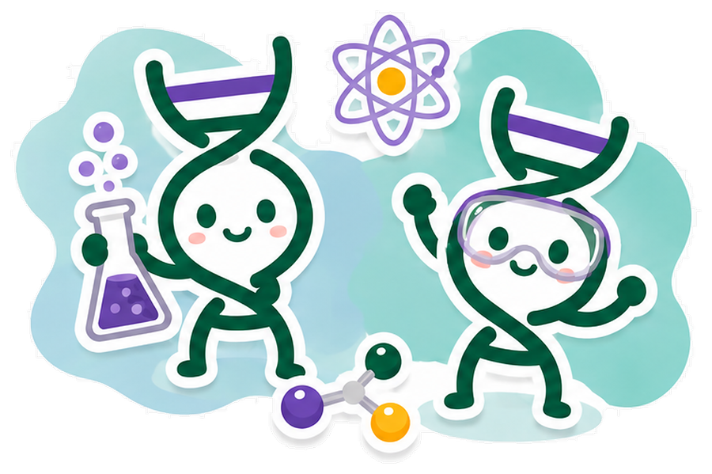

SynBase is a 100% free, self-paced online curriculum adapted from the Stanford iGEM Bioengineering Research Program. No background knowledge required!
Explore Subjects

How It Works
Modules unlock in order, one page at a time — each lesson is its own page, with more modules being added as the curriculum grows.
See how the ideas in each module show up in real iGEM projects, from the same session students went through live.
Selected lessons include a discussion activity — post your own take and see what classmates wrote.
Finishing a module unlocks the next one, and your progress follows you across every session until you reach the end.
Example Question
Based on a core idea from Module 1. Each module has understanding checks like this one throughout.
Start Module 1